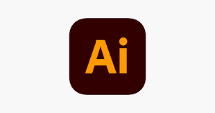
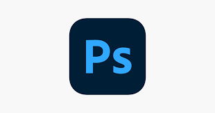

Blender is a free and open-source 3D computer graphics software tool set used for creating animated films, visual effects, art, 3D-printed models, motion graphics, interactive 3D applications, virtual reality, and, formerly, video games.
VISUAL STUDIO CODE beginner
visual studio is free and open-source programme that can make codes and also do web designing. It is easy to use for writing codes because it is very beginner friendly application. you can download software from below button and after that you can continue because there is no so far to learn there practical things from here! good luck...
ADOBE ILLUSTRATOR beginner
Adobe Illustrator is a vector graphics editor and design program developed and marketed by Adobe Inc. Originally designed for the Apple Macintosh, development of Adobe Illustrator began in 1985. Along with Creative Cloud (Adobe's shift to monthly or annual subscription service delivered over the Internet), Illustrator CC was released. The latest version, Illustrator 2022, was released on October 26, 2021, and is the 25th generation in the product line. Adobe Illustrator was reviewed as the best vector graphics editing program in 2021...

ADOBE PHOTOSHOP beginner
Adobe Photoshop is a raster graphics editor developed and published by Adobe Inc. for Windows and macOS.Photoshop can edit and compose raster images in multiple layers and supports masks, alpha compositing and several color models including RGB, CMYK, CIELAB, spot color, and duotone. Photoshop uses its own PSD and PSB file formats to support these features. In addition to raster graphics, Photoshop has limited abilities to edit or render text and vector graphics (especially through clipping path for the latter), as well as 3D graphics and video...

Do you want more guidlines
We will add more guides montly to TECHLORE site. So be pacient and refer other sections if you done all the above guidlines.